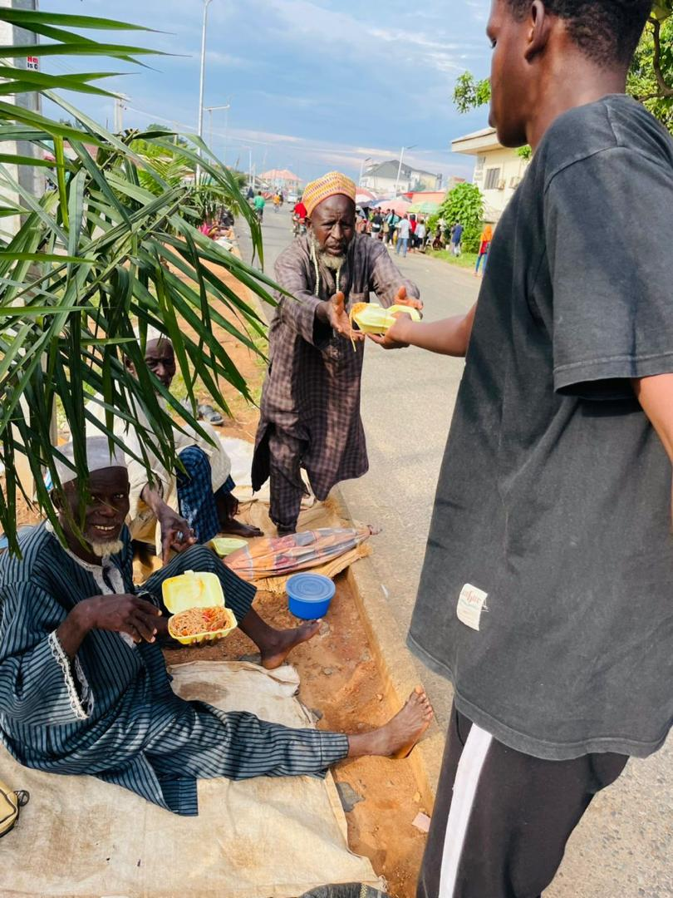

Volunteer Opportunities
We have a variety of roles to match your skills and interests. Find the perfect fit and start your journey with us.

Care Kit Coordinator
Organize and assemble hygiene and wellness kits for distribution to homeless shelters and low-income families.
Time Commitment: 3-4 hours/month
Skills: Organization, teamwork
Learn More
Skills: Organization, teamwork

Youth Mentor
Inspire and guide a young person's journey, providing support, advice, and a positive role model.
Time Commitment: 2-4 hours/week
Skills: Communication, empathy, patience
Learn More
Skills: Communication, empathy, patience

Community Event Staff
Help bring our community events to life by assisting with setup, coordination, and engaging with attendees.
Time Commitment: Varies by event
Skills: Energetic, friendly, proactive
Learn More
Skills: Energetic, friendly, proactive